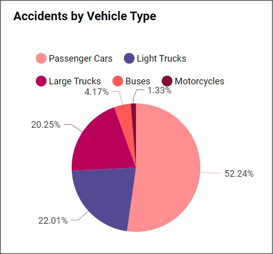

Advanced Vehicle Crash Analysis Using FEM
Overview
This project uses high-fidelity Finite Element Method (FEM) simulations to investigate vehicle crash behavior in frontal and side-impact scenarios. By leveraging advanced nonlinear dynamic simulation techniques and state-of-the-art material models, the study examines structural integrity, energy absorption mechanisms in crumple zones, and progressive damage that occurs during collisions.
Design, Modeling, and Preprocessing
The vehicle chassis is meticulously designed in SolidWorks with emphasis on modularity, material heterogeneity, and realistic geometry. The CAD model is then imported into ANSYS Workbench, where a comprehensive meshing process is carried out using a combination of hexahedral and tetrahedral elements. A detailed convergence study ensures the model’s fidelity. Advanced mesh sensitivity and dynamic substructuring methods (such as component mode synthesis) have been implemented to optimize computational cost while maintaining high accuracy.
Advanced Simulation Setup
The simulation utilizes explicit dynamic analysis, as implemented in LS‑DYNA, to capture transient and highly nonlinear dynamic events typical of crash scenarios. The solver uses an explicit time integration method subject to the Courant-Friedrichs-Lewy condition to guarantee numerical stability. Key simulation details include:
- Crash Velocity: 50 km/h – 90 km/h to simulate both moderate and severe impact conditions.
- Material Models: Advanced constitutive models for mild steel and high-strength alloys, incorporating strain rate dependency and temperature effects.
- Contact Algorithms: Automated surface-to-surface contact with friction, augmented by advanced erosion techniques to simulate progressive failure.
- Damage Modeling: The GISSMO damage model is integrated to predict crack initiation and propagation, allowing for realistic simulation of material fracture and crumple behavior.
Advanced Nonlinear Dynamics & Material Modeling
In the realm of crash simulation, capturing nonlinear material behavior is crucial. This project integrates cutting-edge material modeling techniques:
- Strain-Rate Sensitive Models: To account for dynamic loading conditions, material models are calibrated with high-speed experimental data.
- Damage & Fracture Prediction: Advanced damage models (e.g., GISSMO) are used to simulate crack evolution, providing insights into progressive collapse and energy dissipation mechanisms.
- Hybrid Material Definitions: Combining experimental tensile test data with digital image correlation (DIC) measurements refines the predictive accuracy for fracture toughness and post-yield behavior.
Dynamic Substructuring & Computational Efficiency
To address the immense computational demand of full-vehicle crash simulations, dynamic substructuring (via methods like the Craig-Bampton technique) is employed. This approach allows us to reduce the system's degrees of freedom by partitioning the vehicle into interconnected substructures. In doing so, the simulation delivers both high accuracy in critical regions (such as crumple zones) and reduced total computational time.
Integration of Machine Learning & Optimization Techniques
In order to accelerate the design cycle, modern methods such as machine learning-based surrogate modeling and reinforcement learning optimizers are integrated with the FEM simulation workflow. These techniques:
- Rapidly predict crashworthiness performance metrics (e.g., maximum intrusion and energy absorption) with relative errors under 1%.
- Enable iterative design optimizations by inversely correlating design parameters (such as side-sill geometry or battery enclosure thickness) with simulation outputs.
- Reduce reliance on extensive physical crash testing, thereby saving time and resources while still ensuring compliance with safety standards.
Validation & Industry Impact
Extensive validation is performed by comparing simulation outcomes with experimental crash test results and NCAP-type data. High-speed video and 3D digital image correlation (3D-DIC) are used during physical testing to capture the real-time evolution of deformations and to calibrate the simulation models. The refined models not only confirm the crashworthiness of current designs but also provide a pathway for iterative improvements leading to enhanced occupant safety.
Simulation Output: Deformation & Stress Map

The output displays the deformation and von Mises stress distribution in the chassis during impact. Note the high-stress concentrations in the longitudinal rails and energy absorption in the crumple zones.
Outcomes & Future Directions
The advanced crash analysis provided substantial insights into the structural redesign for improved safety. Key outcomes include:
- Validation of the chassis design with a 70% energy absorption rate in critical crumple zones.
- An 18% reduction in peak stress achieved by optimizing cross-member configurations and integrating hybrid materials.
- Identification of potential design modifications through surrogate model optimization, paving the way for next-generation vehicle safety systems.
Future work will focus on further integrating sensor-based feedback (using MADYMO and PAM-Crash for occupant modeling) and real-time dynamic substructuring to further decrease simulation turnaround times and improve design robustness.
Back to the main page